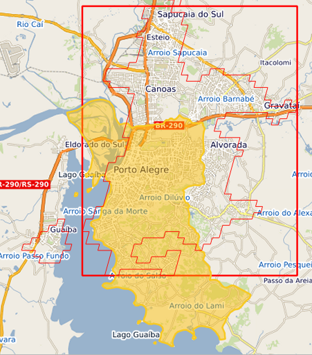

Show the code
# Osmium command
osmium extract -b -51.2791,-30.1722,-50.9407,-29.8048 sul-240501.osm.pbf -o puerto_alegre_urban_center.osm.pbfThe code ?lst-ghs-osmium covered the following area:
# Osmium command
osmium extract -b -51.2791,-30.1722,-50.9407,-29.8048 sul-240501.osm.pbf -o puerto_alegre_urban_center.osm.pbf
# Load data
osm_network <- st_read(eisenberg_connection, layer="")
ors_network <- st_read(eisenberg_connection, layer="porto_alegre_net_pre")
ors_network_subset <- ors_network |> head()
#leaflet() |>
# addProviderTiles("Esri.WorldImagery", group="Esri.WorldImagery") |>
# addPolylines(data= ors_network_subset$the_geom, color)# Import he data
## hospital with closenesss values
closseness <-sf::st_read(eisenberg_connection,
layer = "clossness_hospital_porto")
closseness_df <- closseness |> arrange(ds_cnes, closeness) |>
mutate(lng=
unlist(map(geom_hospital,1)),
lat=
unlist(map(geom_hospital,2)),
closeness_norm =
(closseness$closeness - min(closseness$closeness)) / (max(closseness$closeness) - min(closseness$closeness)) * 100,
position = rank(-closeness))
## Create Color palette for visualization
pal <- colorQuantile(palette = "OrRd",closseness_df$closeness, n=4 )
## Create leaflet product
icons <- makeAwesomeIcon(
icon = 'fa-heartbeat',
iconColor = "#FFFFFF",
markerColor = "#57142c",
library = "fa"
)
leaflet(closseness_df) |>
addProviderTiles(providers$OpenStreetMap.HOT) |>
addCircles(data =closseness_df , radius = ~sqrt(closeness)*10, fillOpacity = .50, color =~pal(closeness)) |>
addAwesomeMarkers(data=closseness_df,
icon =icons,
popup= ~paste0("<b>Código CNES: </b>", cd_cnes, "<br/>",
"<b>Nome: </b>", ds_cnes, "<br/>",
"<b> Closeness</b>:", closeness, "<br/>",
"<b>Longitude: </b>", lng, "<br/>",
"<b>Posição </b>", position, "<br/>"))